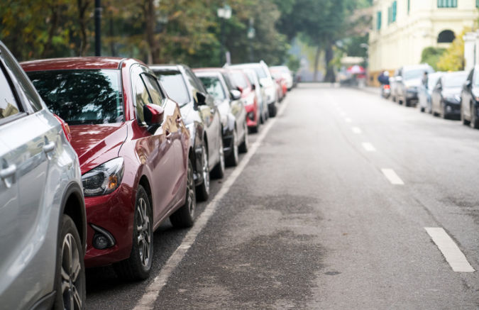
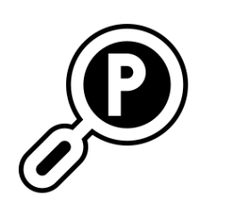
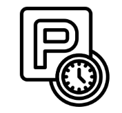
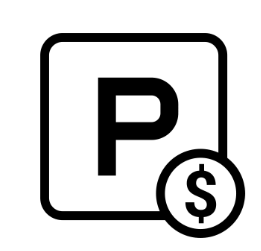

Finding closest vacant roadside parking space system
System Features

Real-time parking system
- Provides real-time parking space detection
- Reduces time and cost in finding parking
- Improves the utilization rate of parking spaces

Edge computing
- Utilizes edge computing technology
- Processes real-time image data captured by cameras
- Ensures efficient and fast response times

Object detection technology
- Using YOLO
- Enhances detection accuracy and efficiency
Shortest path algorithm
- Uses Dijkstra's shortest path algorithm
- Recommends the quickest route to the available parking space
- Helps drivers save time and reduce traffic congestion
Optical flow filtering technique
- Applies optical flow to filter out moving vehicles
- Leaves only stationary objects for parking space detection
- Useful in situations without clear parking line markings

Real-time notifications and navigation
- Provides real-time notifications through a website
- Informs drivers about available parking spaces
Available parking spots:
FAQs
The accuracy depends on the quality of the camera and the environment, but it generally achieves over 90% accuracy.
Currently, the system does not support advance reservations. It provides real-time availability information only.
Parking information is updated in real-time as the system detects changes in parking availability.